| ・ 電源逝く (H29.01.11) | |||
先日のHDD騒動で一段落したはずでしたが，今度は工学実験で使うパソコンの電源が逝きました．経年劣化による電解コンデンサの破裂です．在室していたB3のN谷くん曰く，結構火花が出たとのこと．いろんなトラブルを経験してきたので1時間ほどで修理完了．今回は電源交換で済みましたが，マザーボードの電解コンデンサも液漏れしたり膨らんだりしています．CPUはPentium 4で，流石に研究室には対応するマザーボードのストックがありません．FFTアナライザはLabVIEWのボードが着いていて，最近のマザーボードに合うかどうかも不明．もう一台はPentimum 3．．．SCSIケーブルとか着いています．そろそろ測定系自体の更新時期かもしれません． |
|||
|
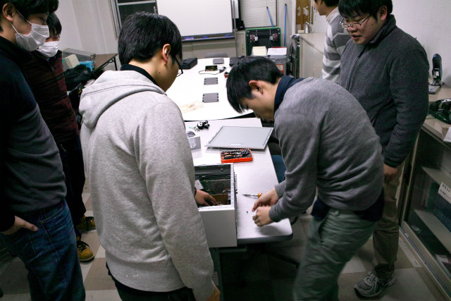
原因調査 |
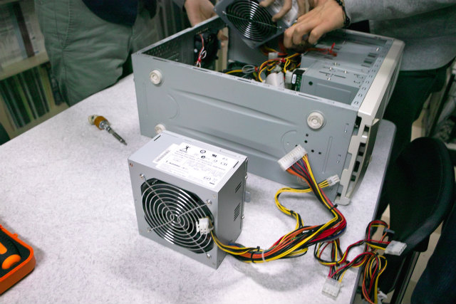
古いPCからストックしておいた電源 | ||
|
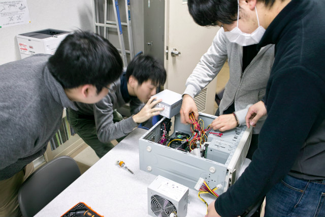
電解液の香ばしいかおり |
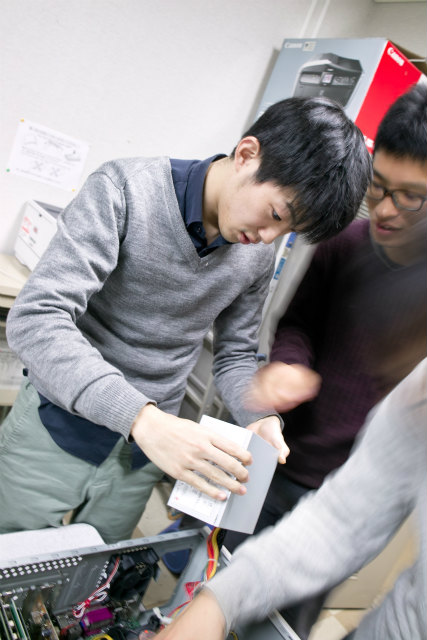
なんかカラカラ音がする | ||
|
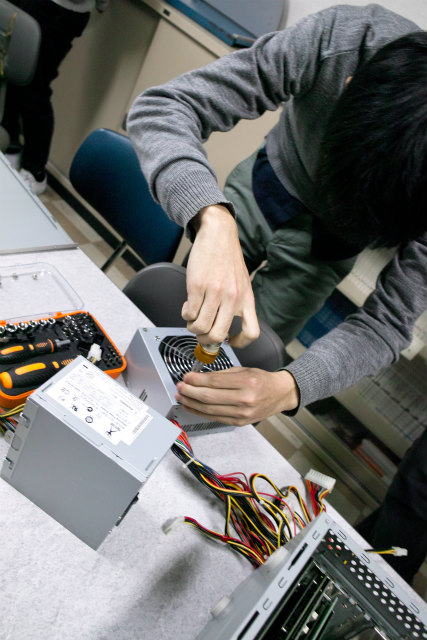
興味あるので場所特定 |
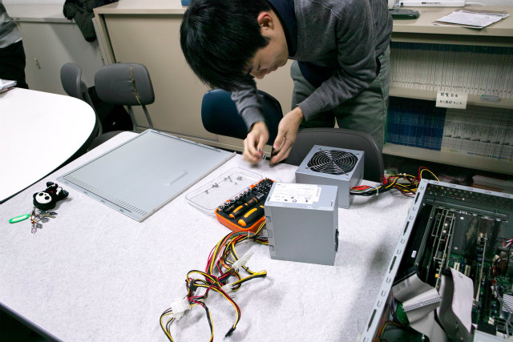
スライドさせると開く | ||
|
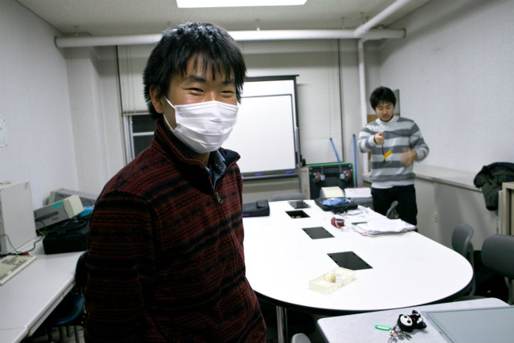
椅子から立ち上がったら火花が見えました |
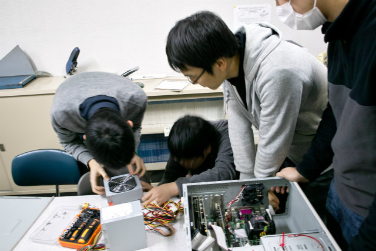
解体 | ||
|
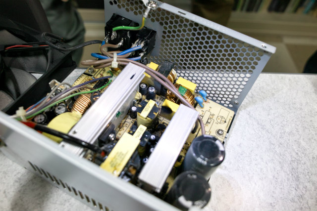
中央の黄色いコンデンサが破裂して，リレーが焦げてます |
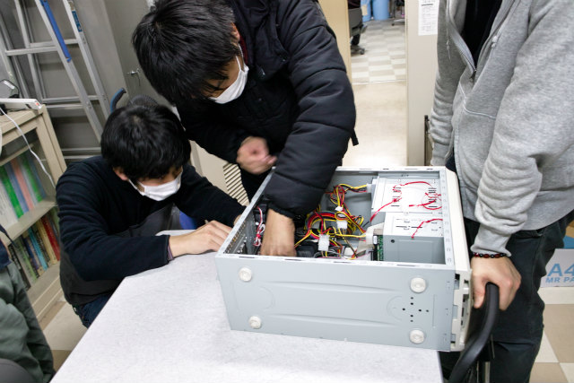
N谷くんがCPUの電源コネクタ接続 | ||
|
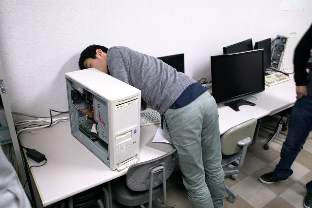
接続して |
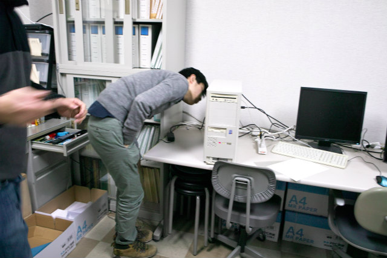
MBの膨らんでいる電解コンデンサが気になる所 | ||
|
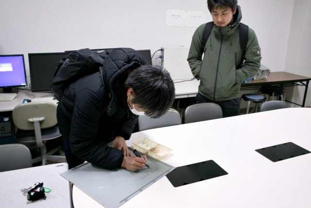
修理状況を記録 |
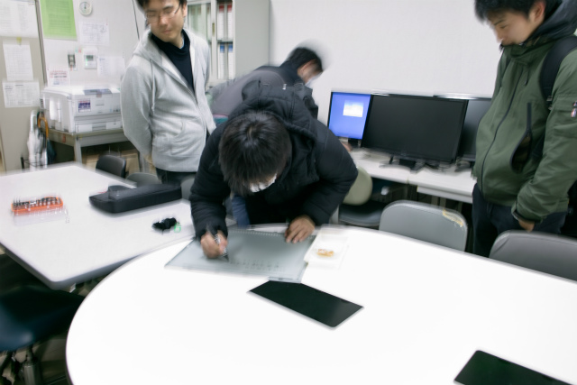
爆発！と記載 | ||
|
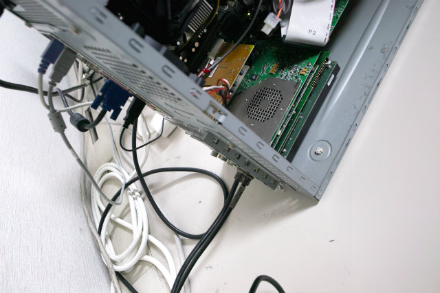
錆びてない所が接続するところ |
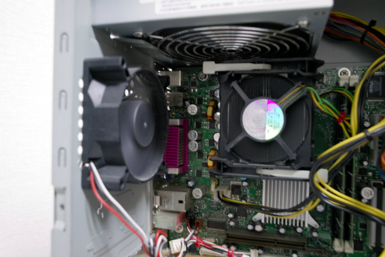
CPUクーラー左のコンデンサから少し液漏れ | ||
|
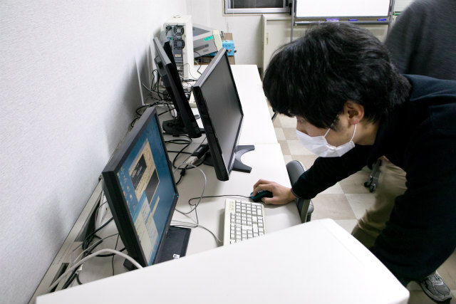
ADボード動作 |
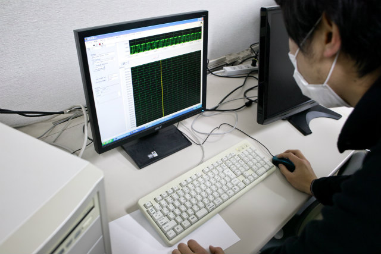
FFTアナライザ動作確認 | ||
|
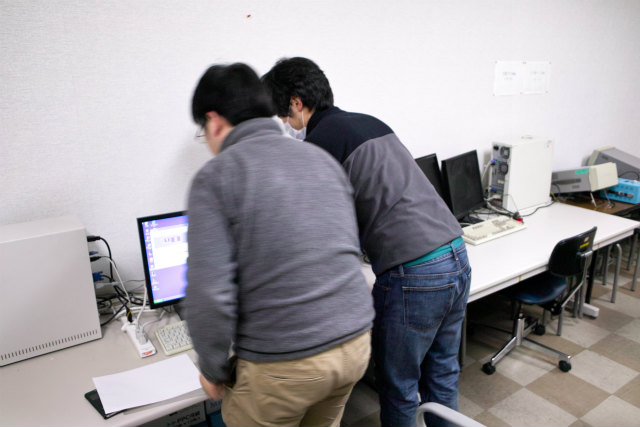
マルチディスプレイ設定 |
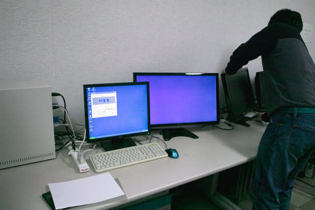
DVI-Dのコネクタが緩んでたのを締める | ||
|
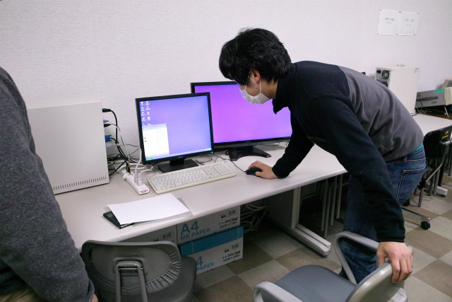
両画面動作OK |
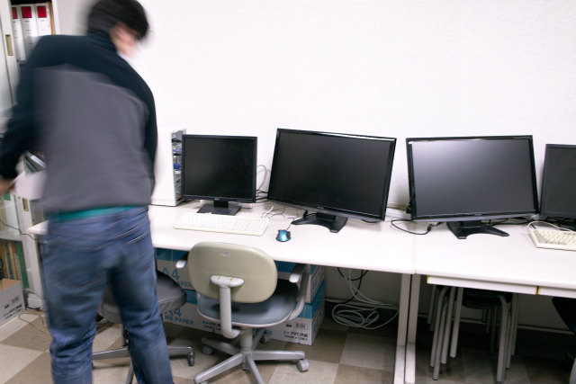
元に戻す | ||